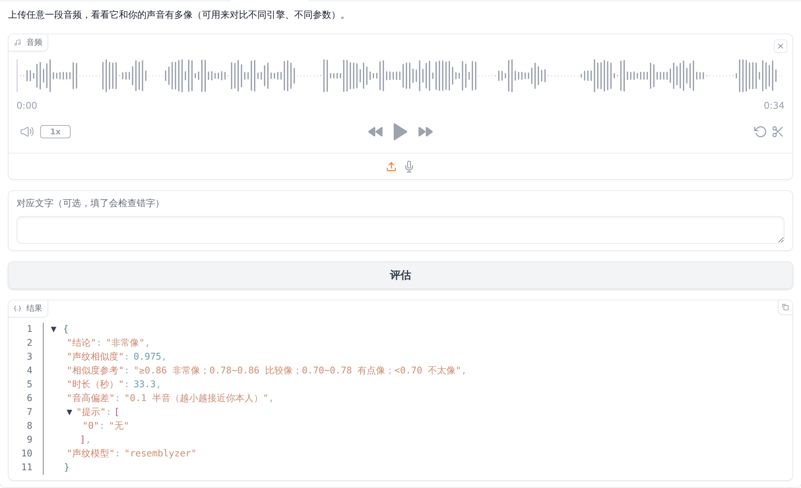

同一个模型，讲稿写得好不好，生成出来的效果差别很大。这一章告诉你：程序是怎么"读"你的讲稿的、怎样控制停顿、怎样纠正读错的字，以及怎样写出"听起来像你在讲"的讲稿。
| 格式 | 怎么得到 | 说明 |
|---|---|---|
| .txt 纯文本 | 记事本、WPS 另存为"纯文本" | 最推荐，最不容易出问题。UTF-8、GBK（记事本默认的"ANSI"）编码都能自动识别。 |
| .md Markdown | Typora、Obsidian、VS Code 等 | 标题、列表、加粗、链接等格式会被自动清理，只读文字（10.5 节）。 |
| .docx Word 文档 | Word、WPS 文字 | 按段落读取。表格、图片、批注、页眉页脚不会被读出来。老版 .doc 格式不支持，请另存为 .docx 或 .txt。 |
| .srt / .vtt 字幕 | 剪映等软件导出 | 按字幕的时间轴生成，每一句放在字幕对应的时间点上（10.7 节）。 |
| 直接粘贴 | 网页里的 讲稿 文本框 | 适合短内容。粘贴后的效果和 .txt 一样。 |
模型一次只能读一小段话，所以程序会先把讲稿切成一句一句，逐句生成，再按你本人的停顿习惯拼接起来。切分规则如下，了解它能帮你写出更顺的讲稿：
| 规则 | 具体做法 |
|---|---|
| 按句末标点切句 | 遇到 。！？；… 和英文的 . ! ? ; 切开。英文里的小数（3.14）、缩写（Mr. / e.g. / etc.）不会被误切。 |
| 换行 = 句子结束 | 一行结束、而行尾没有标点时，会被当作一句话结束（自动补上句号）。行尾是逗号、顿号等标点时，下一行接着读，不会断句；英文句子在单词中间被硬换行（下一行以小写字母开头）时也会自动接回去。 |
| 空一行 = 分段 | 段与段之间用你本人的段落停顿（通常 1 秒左右），段内句子之间用句子停顿。 |
| 太短的句子会合并 | 少于 6 个字（音节）的句子，例如"好。""对吧？"，会和下一句合在一起生成，避免孤零零的一两个字听起来生硬。 |
| 太长的句子会拆开 | 中文超过 50 个字、英文超过约 45 个音节的句子，会在逗号、顿号等处拆成几段生成，中间用很短的逗号停顿连接，听起来仍然是一句话。 |
| 句子的语气类型 | 以问号结尾的是疑问句，以感叹号结尾的是感叹句，其它是陈述句。程序会给不同类型的句子挑不同语气的参考音频（13.2 节）。 |
除了标点和空行，你还可以在讲稿里直接写停顿标记，精确控制停顿。标记本身不会被读出来，也不会出现在字幕里。
| 写法 | 效果 | 例子 |
|---|---|---|
[停顿] 或 [暂停] | 段落停顿（按你的习惯，约 1 秒） | 我们先看第一个例子。[停顿] |
[pause] 或 [break] | 同上（英文写法） | Let's move on. [pause] |
[停顿=2] | 停 2 秒 | 大家先想一想。[停顿=2] |
[停顿=1.5] | 停 1.5 秒 | 可以写小数 |
[停顿 3秒] 或 [停顿：3] | 停 3 秒 | 等号、冒号、空格都可以 |
[停顿=800毫秒] | 停 0.8 秒 | 用毫秒更精确 |
[pause=800ms] / [pause=2s] | 停 0.8 秒 / 2 秒 | 英文单位 ms、s |
<break time="800ms"/> | 停 0.8 秒 | 兼容其它配音软件的 SSML 写法 |
【】 不行，必须是英文的 [ ]；里面的"停顿"两个字不能写错。[停顿=3]，就能留出 3 秒让画面演示，剪辑时对齐轻松很多（第 11 章）。模型偶尔会读错多音字（"行长"读成 xíng zhǎng）、专业术语或英文缩写（"SQL"该读 sequel 还是 S-Q-L）。遇到这种情况，把正确读法写进读音纠正词典，以后所有讲稿都会自动按你的读法来读，字幕里仍然显示原文。
lexicon.txt（第一次准备素材后自动创建）。# 开头的说明和例子（# 开头的行不会生效）。在文件末尾，每行写一条：原文 => 实际朗读的文字。
# 读音纠正词典：每行一条，格式为 原文 => 实际朗读的文字 SQL => sequel GPT => G P T Python3 => Python 三 行长 => 航长 重庆 => 虫庆 ≥ => 大于等于 e.g. => for example API => A P I
| 想解决的问题 | 词典写法 | 说明 |
|---|---|---|
| 多音字读错 | 行长 => 航长 | 用同音、不会读错的字代替。要写成词（两个字以上），不要只写一个字，否则会把所有"行"都换掉。 |
| 英文缩写要一个字母一个字母读 | GPT => G P T | 字母之间加空格。 |
| 英文缩写要读成单词 | SQL => sequel | 写成你平时的读法。 |
| 符号、公式 | ≥ => 大于等于 | 模型不认识的符号可能被跳过，写成文字最稳。 |
| 你习惯的特殊叫法 | for 循环 => four 循环 | 按你讲课时实际怎么说来写。 |
| 版本号、型号 | v2.0 => 二点零版本 | 避免被读成奇怪的数字。 |
Python 和 Python3 时，先替换 Python3。
② 纯英文 / 数字的词条按整个单词匹配：API => A P I 不会把 RAPID 里的 API 换掉。
③ 中文词条是直接查找替换，所以要写得足够长、足够具体。
④ 词典对这个声音的所有讲稿都生效。如果你习惯用 Markdown 写课件，可以直接上传 .md 文件。程序会按下面的规则处理：
| Markdown 写法 | 程序怎么处理 |
|---|---|
# 第四课：生成器表达式（各级标题） | 读出来，自动补句号，前后各有一次段落停顿。 |
- 第一点、1. 第一点（列表） | 去掉前面的符号和编号，每一项作为一句读。想读出"第一、第二"，请把它们写进文字里。 |
**重点**、*斜体*、`代码` | 去掉符号，只读文字。 |
[链接文字](网址) | 只读"链接文字"，网址不读。 |
 | 整个删掉，不读。 |
> 引用 | 去掉 >，读引用的文字。 |
| 表格 | 每一行的各个格子用逗号连起来读（表格分隔线不读）。一般建议把表格改写成口语。 |
``` 代码块 ``` | 默认整块不读（程序代码念出来没有意义）。想读代码块，把设置里的 skip_code_blocks 改成 false（13.3 节）。 |
--- 分隔线 | 当作分段。 |
| 表情符号 😀 | 删除，不读。 |
| 其它 HTML 标签 | 删除标签，保留文字（<break> 停顿标记除外）。 |
3~5 会读成"3 到 5"（英文句子里读成 "3 to 5"）。—— 会变成一个逗号停顿。【】《》[] {} <>）：括号符号本身不读，里面的文字照常读。书名号里的内容照常读。x^2 写成"x 的平方"，把 1/3 写成"三分之一"。fast 档生成试听一遍（几秒钟一句），把读错的词记下来统一写进词典，再用 best 档正式生成。如果你有一个视频和它的字幕文件（.srt），想用你的新声音把它重新配一遍，并且让每句话还出现在原来的时间点，可以直接把 .srt 文件作为讲稿上传：
[停顿] 标记和"空行分段"规则不适用。[停顿=1]。下面这份讲稿用到了本章的大部分写法，你可以复制到网页里试一试：
# 第四课：生成器表达式 同学们好，欢迎回来。上节课我们学习了列表推导式，今天我们来学习一个和它非常相似、 但是更节省内存的写法，叫做生成器表达式。 先想一个问题：如果我们要处理一个有一千万行的文件，把它全部读进列表里，会发生什么？[停顿=1.5] 对，内存很可能就不够用了。生成器表达式就是为了解决这个问题。 我们看屏幕上的这段代码。[停顿=3] 它和列表推导式的写法几乎一样，只是把方括号换成了圆括号。注意，这一点非常重要！ Today, let's also look at the English term. It's called a generator expression. 好，今天的内容就到这里，大家辛苦了！
生成的音频（.wav）和字幕（.srt）可以直接导入任何剪辑软件。这一章以最常用的剪映（电脑版 / 专业版）为例，介绍三种常见的用法；也介绍一个不用剪辑软件、一条命令替换视频声音的方法。
先写讲稿、生成音频，再对着音频录屏或做 PPT 动画。最推荐：嗓子不用出力，画面跟着声音走。
原视频声音质量差（嗓子哑、有杂音），用字幕时间轴重新生成（10.7 节），再替换原音轨（11.3 节）。
视频里某句话讲错了，只生成这一句，剪进去替换掉。因为音色、音量都和你一致，听众很难察觉。
音频课、播客式课程：直接把生成的音频（可输出 mp3，13.3 节）上传到课程平台。
.srt 文件，字幕会自动按时间出现。字幕和音频要从同一个位置开始。如果你只想把一个视频的原声音换成生成的音频（例如 10.7 节按字幕重新配音的场景），可以用 mux 命令，几秒钟就完成，画面不会重新压缩，画质不变：
voicetwin.bat mux --video "D:\讲课素材\第1课.mp4" --audio "D:\VoiceTwin\workspace\我的声音\outputs\第1课_20260930_213825.wav" -o "D:\成品\第1课_新配音.mp4"
✅ 已生成 D:\成品\第1课_新配音.mp4 就完成了。| 参数 | 含义 |
|---|---|
--video | 原视频文件。 |
--audio | 生成的音频文件。 |
-o | 输出的新视频文件（所在文件夹要先建好）。 |
--keep-original | （可选）加上它会保留原音轨并和新音频混在一起，适合原视频里有背景音乐、你只想叠加解说的情况。不加就是完全替换。 |
[停顿=秒数]，例如演示操作前加 [停顿=3]。"像不像"不能只凭感觉。这一章教你两种方法：用程序的 ④ 评估相似度 功能给任意一段音频打分；以及组织一次简单的盲测，让别人来判断哪段是真人、哪段是生成的。

| 项目 | 含义与参考标准 |
|---|---|
| 结论 | 根据声纹相似度给出的一句话结论：非常像 / 比较像 / 有点像 / 不太像。 |
| 声纹相似度 | 这段音频和你本人声纹的接近程度，0~1 之间，越大越像。≥0.86 非常像；0.78~0.86 比较像；0.70~0.78 有点像；<0.70 不太像。作为参考：你本人的不同真实录音之间一般在 0.85 以上。 |
| 时长（秒） | 去掉开头结尾静音后的长度。 |
| 语速（音节/秒） | （填了文字才有）每秒说多少个字/音节。 |
| 你本人的平均语速 | （填了文字才有）从你的素材里统计出的平均语速。两者越接近，节奏越像你。中文讲课一般在每秒 3.5~5 个字之间。 |
| 音高偏差 | 这段音频的平均音高和你本人差多少个"半音"。1 个半音以内基本听不出差别；超过 2 个半音会感觉音调偏高或偏低。 |
| 错字率 | （填了文字才有）识别出的文字和你填的文字有多少不同。5% 以下很好；超过 15% 说明可能有漏读、读错，或者识别模型听错了（专业术语、人名容易被识别错，不一定是真的读错了）。 |
| 识别出的文字 | （填了文字才有）识别模型听到的内容，可以和原文逐字对照，找出读错的地方。 |
| 提示 | 发现的问题，例如"语速过快/可能漏读""几乎没有声音"。显示"无"表示没发现问题。 |
| 声纹模型 | 用来计算相似度的模型名称（一般是 resemblyzer）。不同声纹模型的分数标准不同，不要跨模型比较。 |
评估功能最有用的地方是比较：同一段讲稿，用不同的方法生成，看哪种更像你。例如：
| 想比较什么 | 怎么做 |
|---|---|
| 校对前 vs 校对后训练的模型 | 校对前训练一次、生成一段；校对后重新训练、生成同样的讲稿，分别评估。 |
| balanced vs best 档 | 同一讲稿用两个档位各生成一次，分别评估。 |
| 不同的参考音频 | 在 指定参考音频 id 里填不同的 id 生成（13.2 节），比较分数和听感。 |
| 不同的引擎 | 用 gptsovits 和可选引擎（13.4 节）分别生成，比较分数。 |
| 你自己的真实录音（作为"满分"参照） | 上传一段没有用来训练的真实录音（例如最近新录的一小段），看看你本人能得多少分，作为比较的基准。 |
最客观的检验方法是盲测：让听的人不知道哪段是真人、哪段是生成的，看他们能不能分辨出来。
01.wav ~ 10.wav，顺序随机。自己另外记一张答案表（哪些是真人）。| 听众 | 01 | 02 | 03 | 04 | 05 | 06 | 07 | 08 | 09 | 10 | 判断正确数 |
|---|---|---|---|---|---|---|---|---|---|---|---|
| 答案 | 生成 | 真人 | 真人 | 生成 | 真人 | 生成 | 生成 | 真人 | 生成 | 真人 | — |
| 张老师 | 真人 | 真人 | 生成 | 生成 | 真人 | 真人 | 生成 | 真人 | 真人 | 生成 | 5 / 10 |
| …… |
| 平均正确率 | 说明 |
|---|---|
| ≤ 60% | 和瞎猜（50%）差不多，基本听不出区别。效果非常好。 |
| 60%~80% | 有时能听出来。问问听众是怎么判断的（"这句语气怪""这里停顿太整齐"），针对性改进。 |
| > 80% | 比较容易分辨。按 12.5 节和第 13 章的方法改进：增加素材、校对文字、使用 best 档等。 |
根据经验，下面这些情况最容易让人听出是生成的，写讲稿和挑选句子时可以留意：
| 容易露馅的地方 | 改进方法 |
|---|---|
| 很长的句子，后半句语调越来越平 | 拆成短句（10.8 节）。 |
| 强烈的情绪（大笑、激动、生气） | 模型主要学会了你讲课时的状态，强烈情绪很难模仿。讲稿里尽量避免，或者这几句用真人录音。 |
| 笑声、咳嗽、清嗓子、"嗯……"等 | 无法生成，不要写在讲稿里。 |
| 专业术语、人名、多音字读错 | 用读音词典纠正（10.4 节）。 |
| 停顿太规律 | 程序已经加入了自然波动；也可以手动加一些 [停顿=…] 让节奏有变化。 |
| 英文带中文腔 | 增加你讲英文的素材（4.3 节）后重新训练。 |
| 个别句子有杂音、电流声、吞字 | 只重新生成这几句（9.5 节）；用 best 档会自动检查和重试。 |